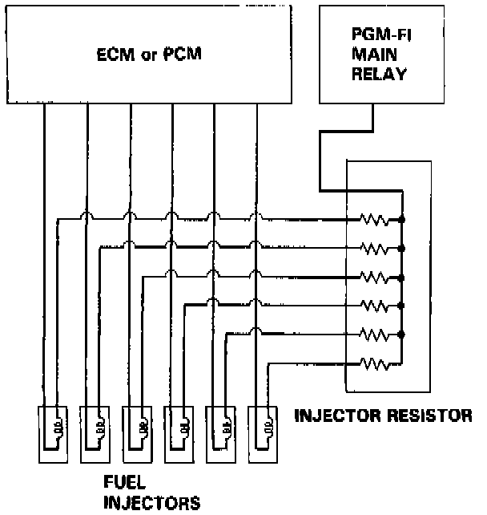

Fuel Injector Resistor: Description and Operation

PURPOSE
Lowers current draw of each injector which prevents damage from overheating as well as increasing the response time of each injector.
OPERATION
Powered is supplied by the main relay, whenever the ignition is turned ON. In the circuit between the fuel injectors and the main relay is the injector resistor. There is one resistor for each injector. The unit lowers the current draw of each injector which prevents damage from overheating as well as increasing the response time of each injector.
CONSTRUCTION
The fuel injector resistor consists of six resistors contained in a common housing.